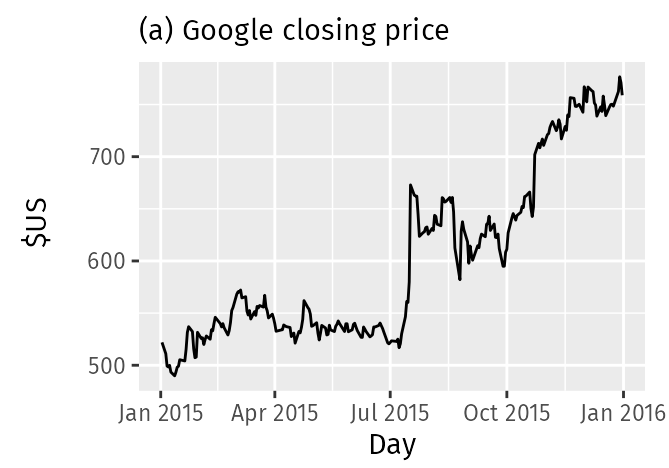
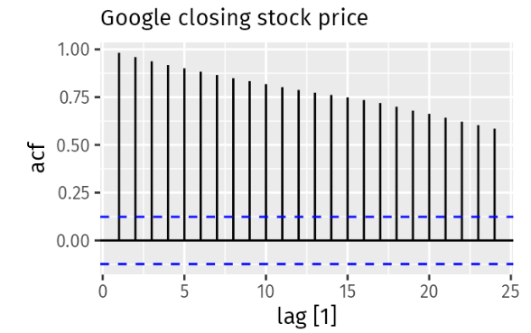
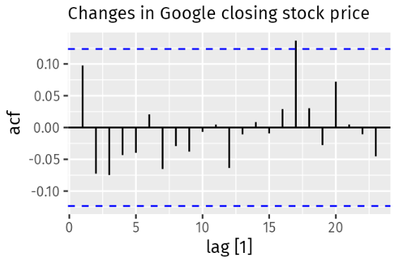
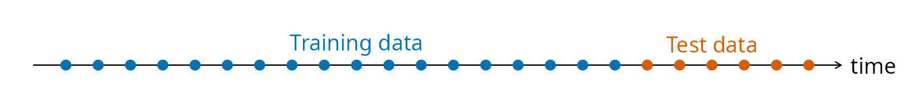
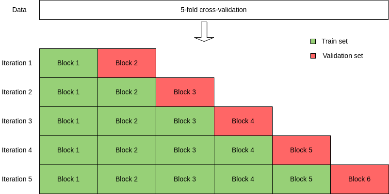

Introducción a la
Predicción de Series Temporales
Minería de Datos - Curso 2024/2025
Grupo de investigación de Sistemas Inteligentes y Minería de Datos
SiMiDat
5 de diciembre de 2024
Esta presentación ha sido compuesta utilizando el motor B6+ del W3C, a partir del código fuente en GitHub proporcionado por David Charte (¡Gracias!). Ajustes realizados por Manuel Germán.
Puedes contactar conmigo mediante correo <mgerman@ujaen.es> o mediante RRSS: X (anteriormente Twitter) @mgermanm0 o LinkedIn Manuel G.
¡Te invito también a seguir a SiMiDat en LinkedIn para enterarte de todo lo que hacemos!
Minería de Datos - Curso 2024/2025
Grupo de investigación de Sistemas Inteligentes y Minería de Datos
SiMiDat
Manuel Germán Morales <mgerman@ujaen.es>
5 de diciembre de 2024
¿Y qué tienen en común todas las mediciones procedentes de estos dominios?
Podemos expresar una serie temporal \(S\) de la siguiente forma.
Donde:
¿Puedes determinar el efecto estacional y los ciclos presentes en esta serie?
Existen 3 ciclos en esta serie. Podemos ver que el primero tiene una duración mucho mayor que los otros dos y que ambos se comportan igual.
Es una propiedad muy interesante y que conviene mantenerla o conseguirla.
Dos tipo de estacionariedad:
¿Es estacionaria? ¿Fuerte o debil? (Pista: Observa los recuadros rojos)
¿Es estacionaria? ¿Fuerte o debil?
A diferencia de otros tipos de datos... ¿Qué es lo que diferencia a las series temporales?
Es necesario tener en cuenta las dependencias temporales que presentan las observaciones.
¿Podremos usar técnicas de análisis que no consideren el orden de nuestras mediciones?
Como primer acercamiento a conocer nuestros datos, podemos obtener características como la media, mediana, desviación y los cuartiles.
Adicionalmente, podemos graficar nuestra serie e incluso elaborar un diagrama de bigotes para detectar valores anómalos. También puede servir un historgrama.
Es importante determinar si la serie presenta tendencia, estacionalidad y estacionariedad
Y, por último, responder a la pregunta: ¿Qué observaciones son las más interesantes?
Una serie temporal \(S\) se puede expresar como una combinación de sus características. La más común es la descomposición STL.
Donde:

Llamaremos \(S^{n}\) a la serie resultante de aplicar \(n\) diferenciaciones a partir de \(S\).
Una diferenciación de primer orden se define como \(S^1 = \{(x_i - x_{i-1}) / x_i, x_{i-1} \in S, \forall i \in \{1,2,..., t\}\}\).
¿Y de segundo orden?
¿Y de orden n?
En resumen, responde a la pregunta: ¿Cómo de relacionados están dos instantes entre si?
Principalmente, se emplean dos métodos que se complementan entre ellos:Las funciones de autocorrelación suponen que la serie es estacionaria.
Si no la es, es necesario diferenciar...
Es decir, mide la correlación entre el instante actual \(x_t\) y \(x_{t-k}\), donde \(k=\{0, 1, 2, ..., n\}\)
La siguiente serie describe el precio de las acciones de Google al cerrar la bolsa en diferentes momentos. ¿Recordáis que propiedad es necesaria para calcular la ACF?
ACF de la serie, sin estacionariedad. ¿Qué observamos?
ACF de la serie, tras aplicar la primera diferencia. ¡Ahora todo está más claro!
Es decir, mide la correlación directa entre el instante actual \(x_t\) y \(x_{t-k}\), donde \(k=\{0, 1, 2, ..., n\}\)
| Tipo de Prueba | Uso |
|---|---|
| Dickey-Fuller aumentada (ADF) | Determinar si una serie temporal es estacionaria |
| KPSS | Evaluar la estacionariedad bajo una hipótesis diferente (contraste a ADF) |
| Ljung-Box | Verificar la independencia de los residuos (autocorrelación) |
| Box-Pierce | Simplificación de Ljung-Box. |
El objetivo de la tarea de Predicción de Series Temporales es determinar las \(H\) siguientes observaciones de una serie temporal \(S \in \mathbb{R}^{c \times n}\). Queremos encontrar una función \(f\) tal que:
tal que \(Error(f(S), Y) = Error(\hat{Y}, Y)\) sea 0.
Como conseguir la función perfecta es inabordable, usaremos un modelo \(\tilde{f}\) que aproxime a \(f\) y que logre minimizar el error.
Los métodos que vamos a ver requieren que la serie sea estacionaria. Sin emabargo, hay modelos que son capaces de lidiar con la no estacionariedad.
AR supone que las predicciones son una combinación lineal de las observaciones.
donde:
¡IMPORTANTE! Al ser autorregresivo... ¿Qué ocurre cuando \(H>1\)?
MA supone que las predicciones son una combinación lineal de errores pasados (ruido blanco).
donde:
¡IMPORTANTE! Al ser dependiente de errores pasados... ¿Qué sucede si el modelo no captura bien estos errores?
ARIMA combina componentes AR, MA e I (Integración) para modelar series temporales no estacionarias.
donde:
¿Podemos usar un muestreo aleatorio con reemplazo (hold-out) convencional?
Es común dividir la serie a partir de un momento determinado y usar como entrenamiento todo lo anterior. 
Por ejemplo, podemos usar un 80% de la serie para entrenamiento y el 20% restante para test.
Los modelos presentados hasta ahora siguen enfoques autorregresivos y que dependen de unos parámetros.
Por ejemplo, un modelo AR(p=2) poseerá 2 coeficientes para estimar el valor de la observación a predecir.
Siguiendo un ejemplo, si el tamaño del conjunto de entrenamiento es de 10, tendremos un sistema de 10-2=8 ecuaciones lineales que se resolverá mediante Mínimos Cuadrados o Máxima Verosimilitud.
| Métrica | Fórmula |
|---|---|
| Mean Absolute Error (MAE) | \(\text{MAE} = \frac{1}{n} \sum_{t=1}^{n} |y_t - \hat{y}_t|\) |
| Root Mean Squared Error (RMSE) | \(\text{RMSE} = \sqrt{\frac{1}{n} \sum_{t=1}^{n} (y_t - \hat{y}_t)^2}\) |
| Mean Squared Error (MSE) | \(\text{MSE} = \frac{1}{n} \sum_{t=1}^{n} (y_t - \hat{y}_t)^2\) |
| Mean Absolute Scaled Error (MASE) | \(\text{MASE} = \frac{\text{MAE}}{\text{MAE}_{\text{naive}}}\) |
| Mean Absolute Percentage Error (MAPE) | \(\text{MAPE} = \frac{1}{n} \sum_{t=1}^{n} \left| \frac{y_t - \hat{y}_t}{y_t} \right| \times 100\) |
| Symmetric Mean Absolute Percentage Error (sMAPE) | \(\text{sMAPE} = \frac{1}{n} \sum_{t=1}^{n} \frac{|y_t - \hat{y}_t|}{(|y_t| + |\hat{y}_t|)} \times 200\) |
MAE, RMSE, MSE son absolutas. MASE, MAPE y sMAPE relativas.
También es interesante realizar un análisis de los residuos para comprobar si el modelo ha sido capaz de aproximar los comportamientos de la serie.
Alternativa 1: Las particiones son secuenciales y van aumentando. Rolling from origin.
Alternativa 2: Las particiones son secuenciales pero no van aumentando. Blocked CV.
OJO: Los bloques se pueden solapar.
En resumen:
Minería de Datos - Curso 2024/2025
Grupo de investigación de Sistemas Inteligentes y Minería de Datos
SiMiDat
Manuel Germán Morales <mgerman@ujaen.es>
5 de diciembre de 2024